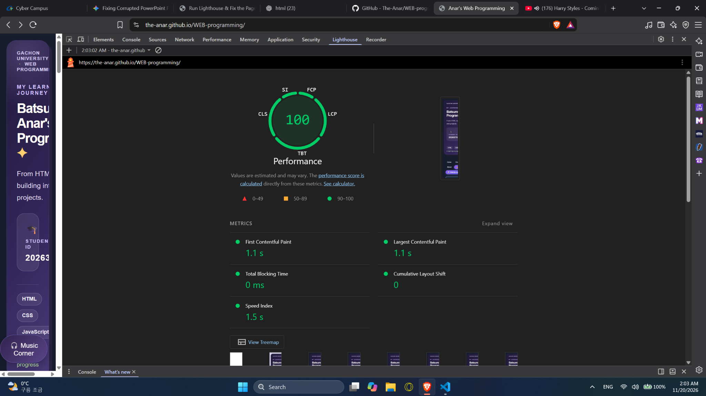

01. Why Optimize Images?
Images can take up a large part of a webpage's download size. Large image files can make a website slower, especially on mobile networks.
WebP is a modern image format that can provide smaller file sizes while maintaining good visual quality.
Responsive images also allow the browser to choose a suitable image size for the visitor's screen.
02. The Picture Element
The HTML <picture> element
lets the browser choose between different
image formats and sources.
<picture>
<source
type="image/webp"
srcset="images/photo.webp"
>
<img
src="images/photo.png"
alt="Example image"
loading="lazy"
>
</picture>The browser uses the WebP image when supported. Otherwise, it falls back to the PNG image.
03. Responsive Images With Srcset
The srcset attribute provides
multiple image sizes. The browser selects
an appropriate source depending on the
device and display conditions.
<img
src="images/photo-800.jpg"
srcset="
images/photo-400.jpg 400w,
images/photo-800.jpg 800w
"
sizes="(max-width: 600px) 100vw, 800px"
alt="Responsive example"
loading="lazy"
>Smaller screens can use smaller image files, reducing unnecessary downloads.
04. Working Example
This example uses the Lighthouse screenshot saved in my project. The PNG image is the fallback source.

The PNG fallback displays immediately. To activate the WebP sources, create the two matching WebP image files in the images folder.
05. What I Learned
I learned how the picture element provides alternative image formats and how srcset helps browsers select suitable image sizes. Using optimized images can reduce download sizes and help improve loading performance, especially on mobile devices.